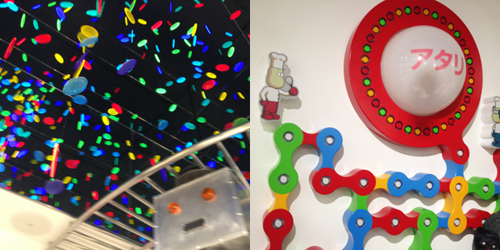

今回取り上げる法則は、まさに書いて字の如く。
関係者＝コアファンとしたときに、関係者以外＝ライトユーザーを意図的に排除することでコアファン愛を表明する“関係者以外立ち入り禁止”の法則です。
[Chapter 1] 事例から法則を読み解く
関係者以外立ち入り禁止、に入れてもらえた時の“高揚感”を利用する。

ライブ会場などでよく見かける、この看板。
当然、ほとんどの人は、この看板をくぐって“向こう側”の世界を覗くことは許されません。
…が、極稀に。
ライブであれば、自分がアーティストの友人だとか、主催側だとかの理由で、向こう側に入れてもらえる時ってありますよね。
その時の、優越感、特別感たるや。
さらに、アーティストが有名であればあるほど、その気持ちの高ぶりは天にも昇るほどでしょう。

（好きなアーティストのライブ前、こんな場面に立ち会えたら…）
かなり身近な例を持ち出しましたが、つまり企業的な視点にたてば、関係者＝コアファンとしたときに、関係者以外＝ライトユーザーを意図的に排除するということ。
よくアーティストのファンでも、駆け出しの頃から応援しているファンにとっては、有名になるにつれ、いわゆる「にわか」が増えて雰囲気が変わっていくのは、苛つきや寂しさを覚えるものですよね。
みんなにいい顔ばかりするのではなく、ときに、関与が低い遊び気分のユーザーを突き放すことで、結果コアファンに寄り添い特別扱いをする。
コアファンからの愛をさらに育むには、とても効果のある考え方ではないでしょうか。
（アーティスト活動でいえば、ファンクラブ限定のシークレットライブをやるようなイメージです。）
2013年の「釣具のイシグロ」の広告に、こんなものがありました。

毎日、命懸けで生きている魚に、遊びで勝てるわけがない。
趣味は魚釣り、と居酒屋でへらへら答えてそうなオジサマたちに、パンチを食らわすような一言。
だからこそ、本気で釣りと向き合うコアファンの心を鷲掴みにしますよね。
まさに、この“関係者以外立ち入り禁止”の法則に沿った事例だと思います。
＞＞＞＞＞＞＞＞＞＞＞＞＞＞＞＞
[ “関係者以外立ち入り禁止”の法則｜Point ]
◎ファン層の拡大等により「コアファンの心境変化」を読み取る
◎「ライトユーザーを意図的に排除」する仕組み・文言をつくる
◎コアファンに「優越感」「本気感」「特別感」を感じさせられるかが鍵
＞＞＞＞＞＞＞＞＞＞＞＞＞＞＞＞
以降では、この法則を念頭に置きながら、活用イメージを深めていきます。
[Chapter 2] 法則から事例を読み解く
“オトナ立ち入り禁止”のお菓子屋さんが素敵すぎる。

兵庫県三田市にある洋菓子店「パティシエ エス コヤマ」。
連日行列ができるほどの大人気店なのだそうですが、お店の隣には、なにやら不思議な形の建物。
この建物、実は、“オトナ立ち入り禁止”なんです。
では、“関係者以外立ち入り禁止”の法則に立ち返ると、オトナを排除してまで大切にしたかったコアファンとは？
それはもちろん、子どもたち。
不思議な建物の正体は、謎のお菓子店「未来製作所」。
小学生以下の子どもしか入れないという“オトナには絶対ヒミツ”のキュートな仕組みづくりで、子どもたちにはワクワクを、子どもの帰りを待つ親にはドキドキを、それぞれ提供しています。



「大人が子どもの話を聞いてあげる機会を増やしたい。」
「全ての仕事やクリエイションは、伝えたいという思いから生まれる。未来の”伝え人”を育てたい」
そんな想いから、この未来製作所は生まれたそうです。
とても素敵だと思います。
これまでの事例はすべて、「ユーザー」に対してコア層・ライト層を区分し、ライト層を排除する、という手法でしたが、これを「企業」に当てはめた場合はどうでしょう。
ドモホルンリンクルでは、「子育て面談篇」と題して、自社の女性をサポートする制度を紹介。
そして、CMの最後には、「女性を大切にしているフリをして、実際はしていない会社への批難」ともとれるような、強いメッセージを投げかけました。


女性が幸せに働けない会社が、女性を幸せにできるはずがない。
自分たちの会社は、女性を大切にしている。
そのメッセージを強く打ち出すために、女性を大切にしない会社＝関係者以外を痛烈に批難する（ように匂わす）。
僕はこのCMをみて、ドモホルンリンクルという会社をとても好きになりました。
最近はこのあとに
[Chapter 3] ブレスト・トライアル
を挟んでいたのですが、今回はちょっと、お休みとさせてください。。
※その他の類似施策は、以下URLにまとまっていますのでご参考ください。
Related Posts
-
 2016年8月20日
2016年8月20日
-
 2016年5月12日
2016年5月12日
-
 2016年4月15日
2016年4月15日